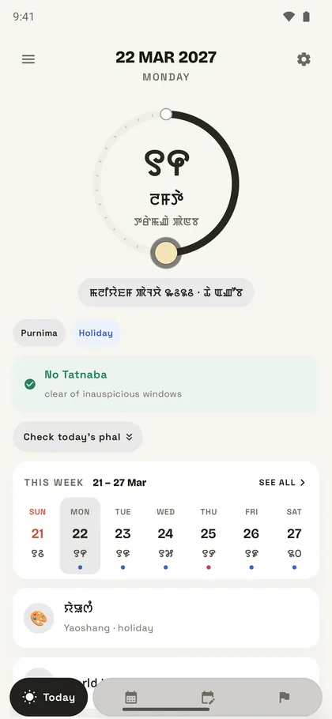
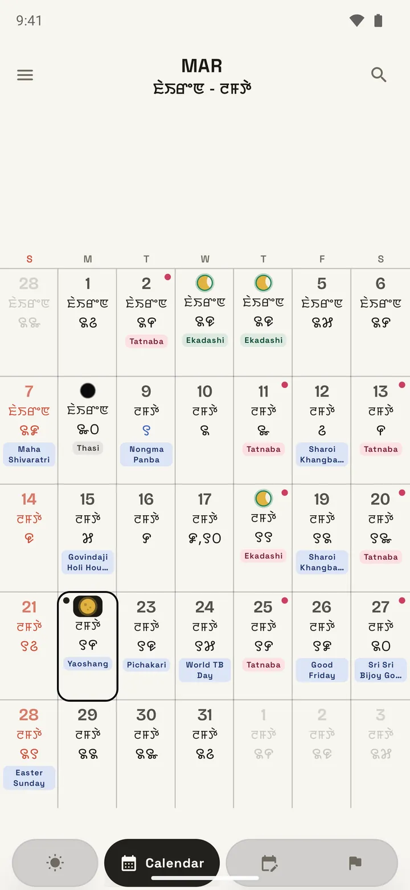
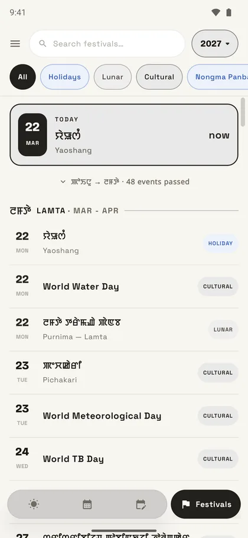
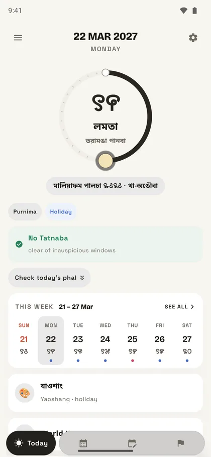
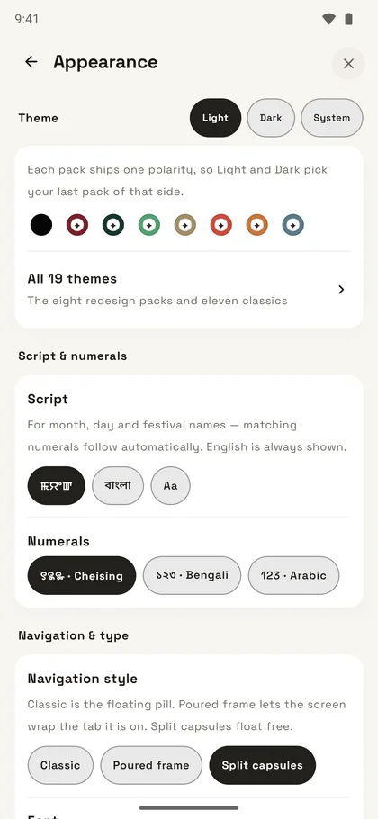

Every Manipuri date,
on your phone.
Kumsing is the lunar calendar Manipur actually uses — the tithi, the month, every festival — read in Meetei Mayek, Bengali or Latin. Every date is already on the phone, so it works with no signal at all.
ꯂꯥꯡꯕꯟ
The Manipuri lunar date, every day
from the almanac, not from a formula
- Sunrise · Imphal
- —
- Next festival
- —
Read live from panchang.db — the same file inside the app.
2,557days computed
187festivals
3scripts
100%offline
The app
Built for how the calendar is actually read.
Not a Gregorian calendar with festivals bolted on — the amanta month, the tithi at Imphal sunrise, and the printed almanac as the final word.

Today

The month

Festivals
Scan a list

In Bengali

Themes
The tithi, correctly
Counted at Imphal sunrise, 1–30 through the amanta month. Merged days print merged, exactly as the hard copy does.
Three scripts
Meetei Mayek, Bengali or Latin — including the numerals. The fonts ship with the app, so nothing depends on your phone.
Works offline
Every date is already on the device. No account, no signal, no waiting — open it on a flight and it is still right.
Every festival to 2030
Cheiraoba, Yaoshang, Ningol Chakouba, Heikru Hidongba and the rest — with the traditions you don't follow switched off.
Scan a printed list
Photograph the dates taped to the wall and they land in your planner, named and dated. On Android and iPhone.
Right wherever you are
Abroad, it shows your local day and still marks every Imphal time as Imphal — so a sunrise is never quietly wrong.
Elsewhere
Follow the build.
Manipuri-first apps, made in Imphal. Kumsing is the first.